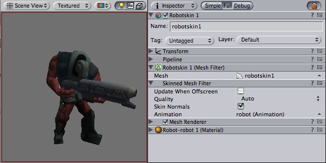

Previous
Previous
The Skinned Mesh Filter is automatically added to imported meshes when the imported mesh is skinned.

An Animated Character rendered using the Skinned Mesh Filter and Mesh Renderer
Properties
| Property: | Function: |
|---|---|
| Should the skinned mesh be updated when offscreen. This also disables updating animations. | |
| If enabled, normal will be updated with the bone animation. | |
| The maximum amount of bones affecting every vertex. | |
| The current animation (change this via scripting). |
Details
Skinned meshes are used for rendering characters. Characters are animated using bones, and every bone affects a part of the mesh. Multiple bones can affect the same vertex and are weighted. The main advantage to using boned characters in Unity is you can enable the bones to be affected by physics, making your characters into ragdolls. You can enable/disable bones via scripting, so your character instantly goes ragdoll when it is hit by an explosion.

A Skinned Mesh enabled as a Ragdoll
Skin Normals
When Skin Normals is enabled, normals will be correctly animated with the bones. This makes your character correctly react to lights. If it is disabled the normals from the character in bind pose will be used.
Skinning Normals comes at a slight performance cost. In some situations correct lighting is not necessary and you can get away with disabling this option. Play with it and see if it makes difference in your particular situation. If you can't see a difference, disable Skin Normals.
Quality
Unity can skin every vertex with either 1, 2, or 4 bones. 4 bone weights look nicest and are most expensive. 2 Bone weights is a good compromise and is most commonly used in games.
If Quality is set to automatic, the Quality Settings Blend Weights value will be used. This allows end-users to choose a quality setting that gives them optimum performance.
Update When Offscreen
When a Skinned Mesh is not visible their skin will not be updated. That means the animation will stop playing until it comes onscreen again. This is an important performance optimization. That allows you to have a lot of characters running around not taking up any processing power when they are not visible.
For characters you should always check this option off in order to gain performance.
Sometimes however, the bounding volume will change a lot based on a change in the animation. Thus you need to enable offscreen updating to prevent object from suddenly appearing on screen.
Hints
- Skinned meshes can be imported from Maya or Cinema4D.